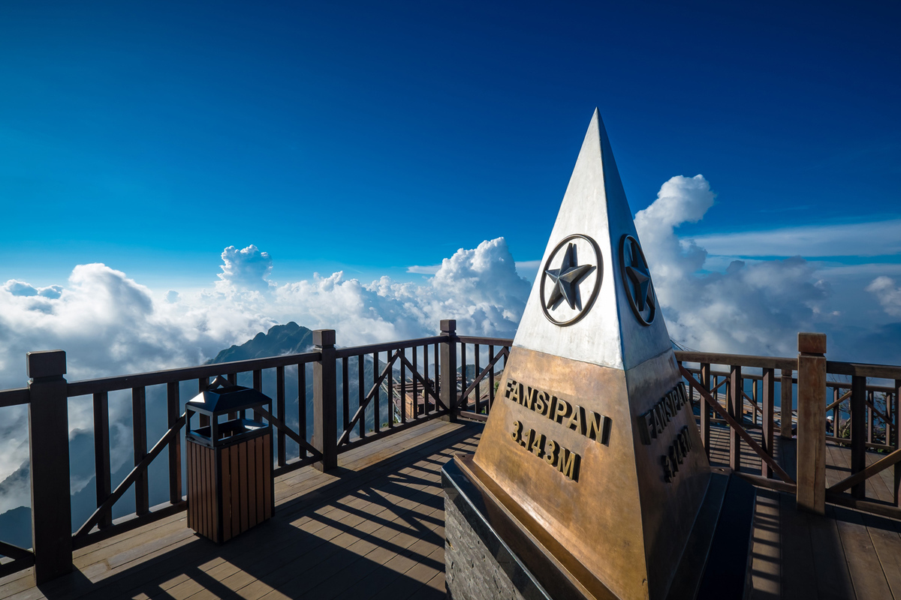
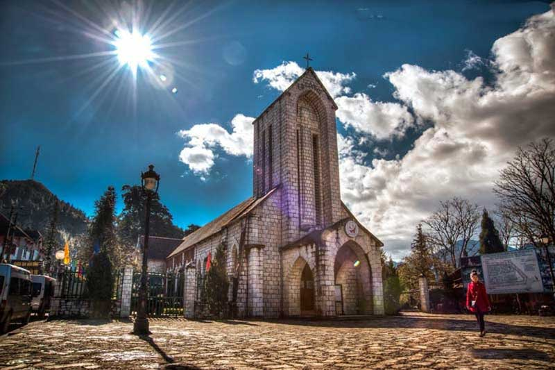

Fansipan Peak Sapa
(roof of Indochina)

stone church in Sapa

Snow scene in Sapa in winter
Fansipan Peak Sapa
(roof of Indochina)
stone church in Sapa
Snow scene in Sapa in winter

heart tea hill

glass bridge
S-shaped road

Ba Na hills tourist destination

Da Nang beach

Dragon Bridge